Mobility toy
Abstract
A young girl has cerebral palsy and brain bleeds. She needs assistance with becoming mobile.
Team members
- Our team from left to right includes Dayro Martinez, Stephen De Troye, Christopher Gray, Megan Wesemann, and Shelby Kilgore.
- We consulted with Stephen's father, Robert De Troye, who is an orthopedic surgeon. He also suggested speaking with Calvin Hoyle, an orthotics specialist at Excel Prosthetics.
Problem Statement
A nine-month-old adoptive daughter of a family in McMinnville has cerebral palsy. She lacks muscles in her core stomach area and also in her hips. The lack of muscles causes her to lean over to one side because she has to concentrate on flexing these muscles to stay straight. Her brain does not automatically do it for her. She is currently in therapy, but they estimate that she will not walk until she is three to eight years old. The parents would like to see a device that could support her spine/core and hips to make bathing and feeding easier.
Design Specifications
- Adjustable - The family would like to see this product grow with her.
- Design cannot cause the tube for her brain bleeds to collapse.
- Waterproof for bathing.
- Lightweight
- Comfortable
- User-friendly
Background research
1. What exists already, similar products 2. identify gaps in existing products or technology to be addressed
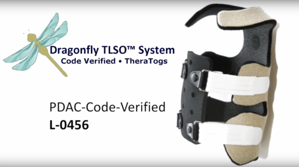
The Theratog Dragonfly orthotic would be an ideal solution for her except it's not waterproof and isn't adjustable.
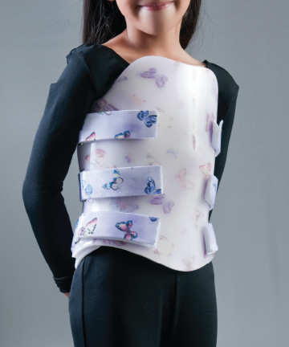
The traditional clam-shell back brace would be a possible option, but it works more as a replacement for her abdominal muscles rather than teaching her to use them, and is not adjustable.
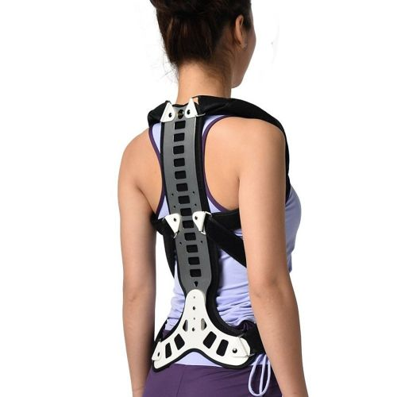
This orthotic provided a decent amount of inspiration to our final design, but it is not adjustable and wouldn't provide enough support
Conceptual Design Process
Our design conceptualization truly began until meeting with the family due to how much cerebral palsy can differ depending on the person. We did begin research of the diagnosis to familiarize ourselves with what we could be facing. While meeting with the family, two of our members (Chris and Stephen) drew up a design concept of chair design. This is further described in ‘Design Concept 1’. They soon realized this may not be the most ideal method functionally for the family and child. Walking away from the meeting, we had ideas of designing something more of the lines of spinal and hip support. Our ideas further developed off of products that are currently on the market. We finally came to agree on a concept that combined multiple aspects of different products combined into one as a hybrid design.
Design Concept 1 - Chair Concept
After the initial meeting with the mother of the child, whom we are designing a custom device for, our original thoughts were to create a chair based device that could be used with multiple accessories. This chair could be attached/clipped into a stroller, a bath chair, a regular chair for feeding, etc. that all matched the device we created to hold her. The idea was to have the child stay in the chair and the parents could easily connect or disconnect the chair and move it from one place to another for the next activity. This would save them time and effort by not having to take her in and out of a new device each time.
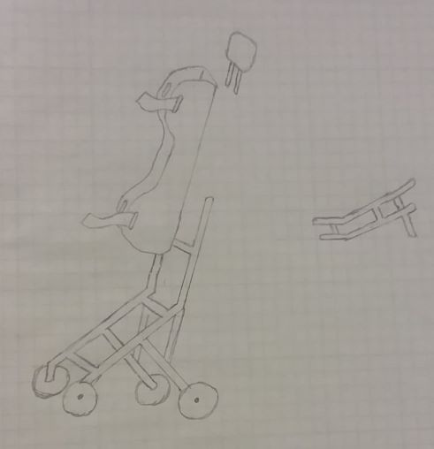
However, as her specific needs were better understood, we realized that this would not serve her family efficiently. We found that a drawback of this particular design would specifically be a poor idea for the bath time needs and the device itself would be too cumbersome and heavy to be useful. Moving forward, we are trying to implement a lighter weight device that is going to help her parents use it in multiple capacities. We also hope to make something that will allow it to continue to meet those needs as she grows.
Design Concept 2 - Metal Spinal Support
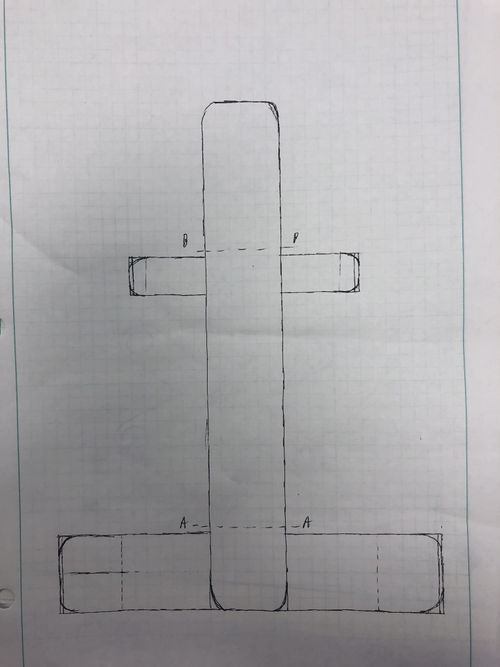
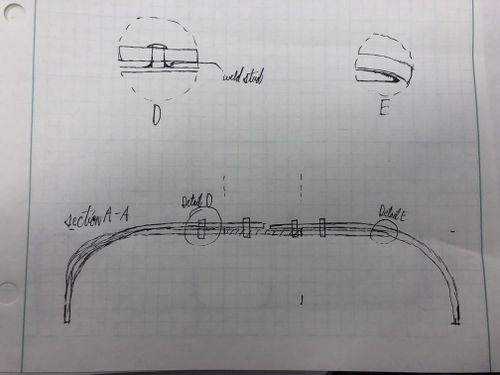
This design could be a good fit for our project. This spinal support could help give the child trunk stability and it would be highly adjustable. However, it would likely be uncomfortable for long durations as it would be very rigid.
Design Concept 3 - Moldable Spinal Support
Supports the spine and trunk with a lightweight, rigid panel. A custom mold-able spinal support is anchored on the pelvis with the use of a breathable undergarment to help with torso and core stability. This design was is similar to the Dragonfly TLSO, which is pictured above. The design would be very similar but use different materials and adjust the layout of the design slightly.
Design Concept 4 - Hybrid Spinal Support
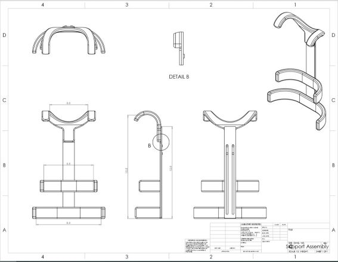
This design encompasses key features from both the metal and mold-able spinal supports. In the drawing above is the aluminum base of the design. It has some adjustability features with the sliding bolt section located down the spinal piece. This will allow the height of the support to be adjusted as she grows. There will also be adjustability incorporated into the side supports that will use one of the spinal aluminum supports to adjust as the spinal section does. There will be straps that cross over her midsection, connecting to the side supports to provide a slight squeezing comfort. It will also be what connects her safely to the device while allowing enough of her body to be exposed for bathing. The shoulder straps and hip pieces will be made of a mold-able material to provide more flex while still giving enough support to keep her upright. Multiple of these pieces may need to be made to accommodate her as she grows for different developmental stages.
Evaluate concepts/select candidate
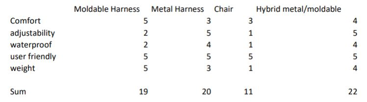
The clip above is the decision matrix we used to compare the four different designs. We knew off the bat that the chair was not going to fit all the criteria. The ideal design would have to be something that encompassed all the positive characteristics of the metal and moldable design options. Which leads us to the winner, the hybrid design between the metal and moldable designs won and will be the design to pursue.
Detailed Design
Leaving the design concept stage, we knew that the hybrid model would incorporate the best attributes to the support. Half a week before submitting the final design, the family and coordinator said they were anticipating something to help her get vertical and eventually moving. From the beginning, we knew that the quality of an aluminum alloy would hold the characteristics of support we need that is also machinable. In order to avoid this looking sterile, we came up with a design to cover all of the aluminum with neoprene and create a softer design.
We began researching and analyzing types of foam with aspects of comfort, possibly waterproof or water-resistant, and dense to hold up after a long period of time and provide the child support. For the foam, we chose Minicel-L XLPE (L200) from the Foam Factory website which broke down the types of foams available and their characteristics. The Minicel is extremely dense and rebounds back from pressure immediately after it is released, resistant to water absorption which will help during bath time, and is soft while providing adequate support. Other benefits included its resistant to microbial growth and do not emit vapor like other polyurethane foams tend to do overtime.
Next, we delved into researching plastics for the hip, side, and shoulder supports. This needs to have enough rigidity to provide support, but not too rigid to where she's unable to adjust or flex the plastics. We also wanted to find something that could be remolded, in case our mold becomes too tight or does fit her right, we wanted the parents to be able to adjust that if she needed an adjustment. We found an ABS Sheet of O&P that has the properties necessary, was not over budget, and it is remold-able.
Lastly for the spinal support, we narrowed the choices of fasteners from the dimensions of the design along with how much and what type of Velcro for the straps across the torso and also the slips that will cover all the foam and aluminum that will need the Velcro to be put onto the device and also be removed for easy cleaning. We chose the color of Neoprene Scuba material by letting the mother choose (Spring Green) and approximated five yards were needed.
Adjusting our design with addition of a frame to hold the child upright: The family felt as though we needed to find a way to hold her up vertically and make her mobile to help the mom get her around more easily. We went back to the drawing board and came up with a way to incorporate our hybrid model with a gait trainer to get her vertical without compromising mobility. Since this was short notice, we are going to buy the frame, add additional attachments, and add a way to secure her to the frame. The frame is made of aluminum keeping the trainer fairly light at about 18 lbs with a capacity weight of 75 lbs. We want to add a hip positioner and pad, and also hand grips for the girl to hold onto which are seen in the picture below. We also want to fabricate a handle for the mom to use so she can push the child around when needed. To hold her in place while in the gait trainer, we are going to add loops with nylon straps to go through the spinal support and attach to the frame of the gait trainer.
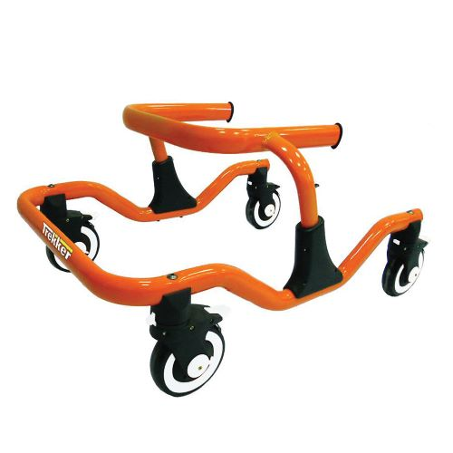 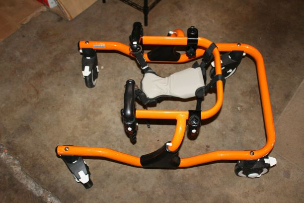
Description of selected design
We decided to continue with Design 4, The Hybrid Design. This encapsulated ideas from both designs 2 and 3. This is a basic aluminum frame spinal support with ABS supports that attach to the frame to help the child support herself and begin to work the muscles the support touches. We had to add to this design with a basic aluminum frame to hold her vertical and get her from laying down. This provides her support while also allowing her to begin to use the muscles the CP has affected.
Detailed description of selected design
Our final design is based on designs 2 and 3, which created our fourth design, the hybrid. We are using aluminum spinal support which will give good stability and provide a steady base. There will be two pieces of aluminum that overlap in the middle and can be adjusted in overall height as she grows. On the metal frame, there will be slots machined into the aluminum where bolts can be tightened down to the proper height and adjustable up to 16 inches tall for her spine (approximating this will last her until she is eight years old). However, we are using ABS sheet of plastic which will be attached with bolts to the spinal support that requires to be molded for current and future dimensions, which is why we are choosing to create two sets of ABS molds for the hip, torso, and shoulders. The bolts for the torso attachment can be adjusted vertically in case the family needs to change the height of support as she grows. Finally, we are completing this design by using straps that begin at the shoulder straps, crossing her body to attach as the torso supports that will fasten with Velcro. This will provide additional supports, stimulate her mind to pick up the muscles that those supports are attached to and begin to work these muscles and hold her in place inside the spinal support. To provide additional comfort and support, we chose the Minicel Foam to be attached by Velcro to the spinal support (aluminum), ABS molds, and straps. We chose the Velcro attachments in case the parents need to clean it, dry the foam, adjust it on the frame, or replace it if it no longer provides the support it needs.
In addition to the spinal support, we decided that buying a gait trainer with a hip positioner to hold her up would be the most efficient use of money and time. The frame is made of aluminum keeping the trainer fairly light at about 18 lbs with a capacity weight of 75 lbs. We want to add a hip positioner and pad, and also hand grips for the child to hold onto which are seen in the picture below. We also want to fabricate a handle for the mom to use so she move the girl around the home. To hold her in place while in the gait trainer, we are going to add loops with nylon straps to go through the spinal support and attach to the frame of the gait trainer.
Metal: Aluminum
Plastic: ABS
Straps: Neoprene with Velcro straps
Foam: Minicel Foam
Frame: TK 1000 Trekker Gait Trainer, Orange Tyke
Analysis
We performed analysis through ANSYS using the model from our SolidWorks design.
Aluminum Material Properties:
Engineering analysis 1
The first analysis looked at applying a force at the top of the support and fixing the two lower supports.
Boundary Conditions:
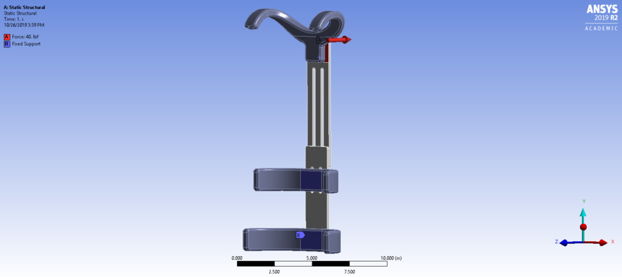
Equivalent Stress:
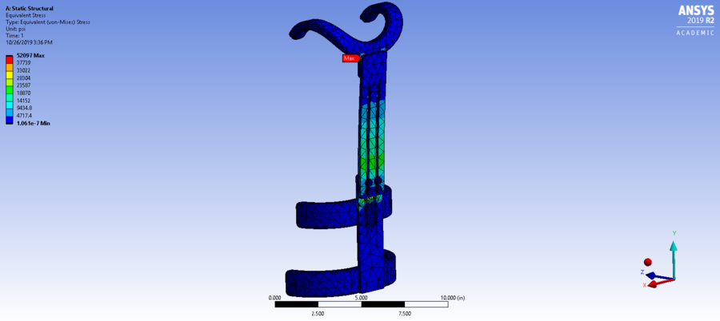
Engineering analysis 2
In the second analysis, I applied a force on the side of the top bar to apply a shear force on our fasteners.
Boundary Conditions:
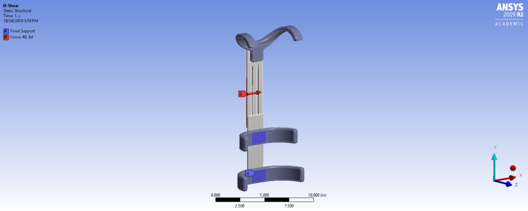
Equivalent Stress:
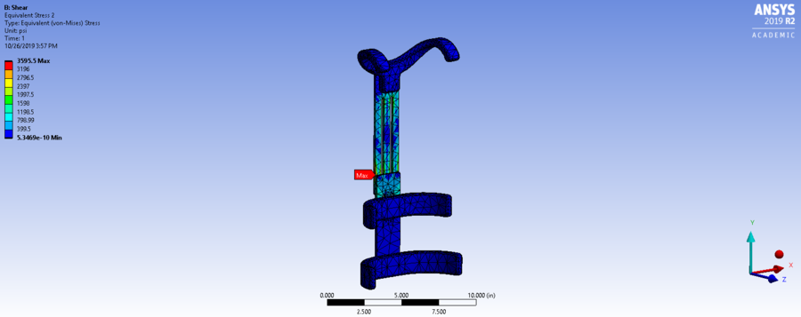
Engineering analysis 3
For the third analysis, I used solidworks to verify that the minimum and maximum adjustable heights of our design meets our requirements.
Minimum:
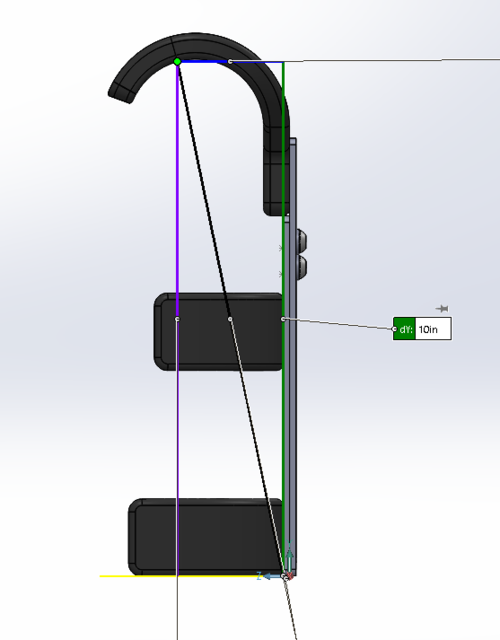
Maximum:
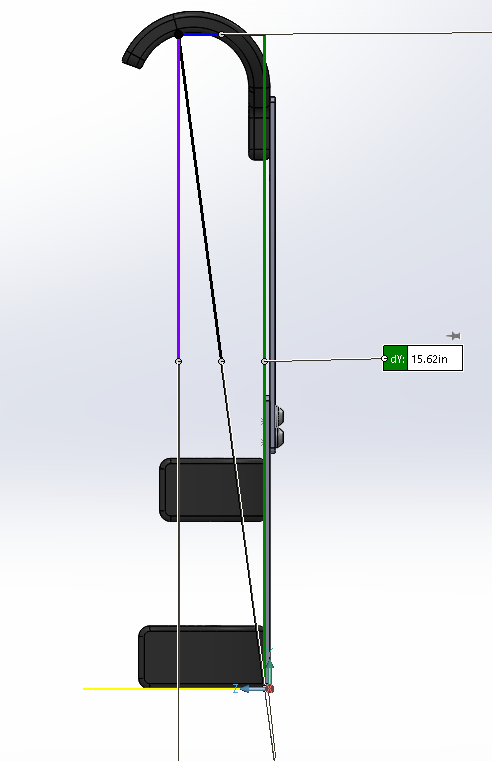
CAD Drawings
Bill of Materials
Links
- Trekker Gait Trainer with Hip Positioner: https://www.ebay.com/itm/392364095913
- Minicel-L XLPE (L200): https://www.foambymail.com/ML200/minicel-l200.html
- Velcro straps: https://www.hookandloop.com/3-4-velcro-174-brand-pressure-sensitive-adhesive-hook-acrylic-black
- Nylon Straps: https://www.strapworks.com/Flat_Nylon_Webbing_p/fnw112.htm
- Spring Green Neoprene 5 yards: https://www.fabricwholesaledirect.com/products/neoprene-scuba-fabric?variant=1680393859
- General Purpose Aluminum Tubing: https://www.mcmaster.com/89965k374-89965K376
- Stainless Chicago Screws 8-32 1/2" to 5/8": https://www.mcmaster.com/94887A136
- Stainless Chicago Screws 8-32 1/2" to 3/4": https://www.mcmaster.com/94887A142
- Klean Strip Kwik Strip Paint 16 oz: https://www.lowes.com/pd/Klean-Strip-Kwik-Strip-Paint-and-Varnish-Stripper-16-Oz/1000659665
- Rust-Oleum Satin Nickel Metallic: https://www.lowes.com/pd/Rust-Oleum-Universal-Satin-Nickel-Metallic-Spray-Paint-and-Primer-In-One-Actual-Net-Contents-11-oz/3729729
- ABS Sheet of O&P, White: https://www.curbellplastics.com/Shop-Materials/Product/ABS-Sheet-for-O-P/W01-00195/ABS-Sheet-for-O-P-White-(0-187-in-x-48-in-x-96-in)-Haircell-1-Side-General-Purpose-Extruded
Assembly Instructions
The finalized design chosen for the spinal support is as shown below.
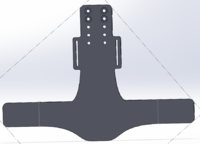
200px
{kind=link}
We began with prototyping how to create molds for thermoforming the O&P ABS, which included partnering with Dr. Pardue to use the laser cutter in the Senior Design Lab. We created approximate shapes for the shoulders, hips, and waist where to ABS would need to be formed.
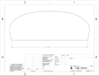
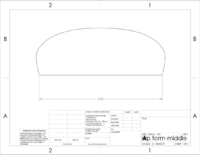
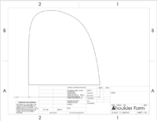
Fabrication Process
Insert pictures of fabrication process
Testing and implementation
Describe testing, delivery, how used/received by the family
Photos of Completed design
Insert pictures of the final product
Instructions for safe use
Provide a clear summary of safe use for the family. Do not use the device unless supervised by an adult that has been fully understood the safe use of this product.